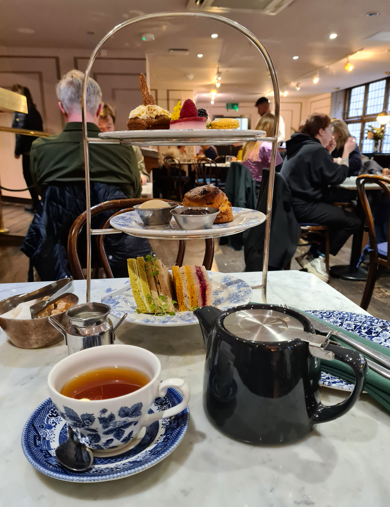

アフタヌーンティーとは
アフタヌーンティー（英：afternoon tea）はイギリス発祥の喫茶習慣で、16-17時頃に紅茶と共に軽食や菓子を喫食する茶会である。

歴史
1840年頃に第7代ベッドフォード公爵フランシス・ラッセルの夫人、アンナ・マリア・ラッセルによって始められたと伝えられる。当時はランプの普及や夜の社交により夕食の時間が遅くなる風潮にあり、昼下がりの空腹に苦しめられたベッドフォード公爵夫人が友人を招いてこれを供したものが、貴婦人の間で社交文化として広まった。やがて19世紀後半には中産階級の間にも広まった。
伝統的には上流階級における社交行事であり、紅茶と食事との取り合わせ、給仕のそれを含めた礼儀作法、室内装飾、家具調度、使用されている食器や飾られている花、美しい庭園など、広範な分野の教養と社会的地位を表したもてなしの場として催された。またアフタヌーンティー用のティーカップやティーガウン[注釈 1]といった物も作られた。もっとも、現代においてはこうした形で催されることは稀であり、ホテルやカフェでも提供されるようになり、伝統的な作法を求めない形のアフタヌーンティーは珍しくない。
客間のローテーブルで提供されたことから、ローティー（英: low tea）とも呼ばれる。類似の習慣であるハイ・ティー（英語版）（英: high tea）と混同されることもあるが、これは仕事終わりの時間に紅茶と共に比較的栄養のあるものを飲食する、労働者階級に発祥した習慣であり、食事用のハイテーブルで喫食されたことに由来する。
飲食の内容
アフタヌーンティーでは紅茶と共に、軽食や菓子が供される。伝統的には軽食はキュウリサンドイッチやエッグサラダ、スモークサーモン、チーズ、ローストビーフを用いた小さな耳なしサンドイッチが用いられる。また軽食を省いた様式もある。菓子は当初からケーキが用いられるが、やがてスコーンを用いる習慣も広まり、クロテッドクリームとジャムを添えたスコーンを用いる様式はクリームティーとも呼ばれる。
伝統的なテーブルセッティングでは3段重ねのケーキスタンド（トレイの一種）を用い、下段にサンドイッチ、中段にケーキ、上段にクロッシュで保温されたスコーンなどが載せられる。飲食の順序にも作法があり、始めは紅茶を口にし、ミルクはその後に入れる。サンドイッチは軽い具材から重い具材の順に食べ、菓子などはその後にスタンドの順に従って食べる。
現代的な様式ではカナッペやシャンパン、マカロンなど様々な飲食物が取り入れられる例がある。